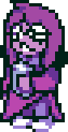
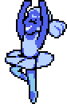
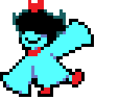
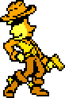
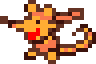
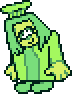

The 7 Flowers are major secondary characters and minibosses
encountered throughout the Dark World.
They are the Dark World manifestations of the other six
flowers kept in Asgore’s flower shop, each representing a distinct
personality, style, and soul color trait.
A quiet, hooded darkner who wants to be a true genius,
observing everything from under their cloak
A graceful, ballet-themed darkner whose moves
are strictly tied to rhythm and precision.
A small, nimble darkner with bright red accents,
she's always ready to dodge and weave.
A quick-drawing cowboy darkner with a sharp eye
and a flair for wild west standoffs.
A tiny, loyal rodent partner who tags along with Green,
she's small in size but full of energy.
A kind and gentle darkner who loves to cook and take care of others,
wearing a cozy chef-like outfit.